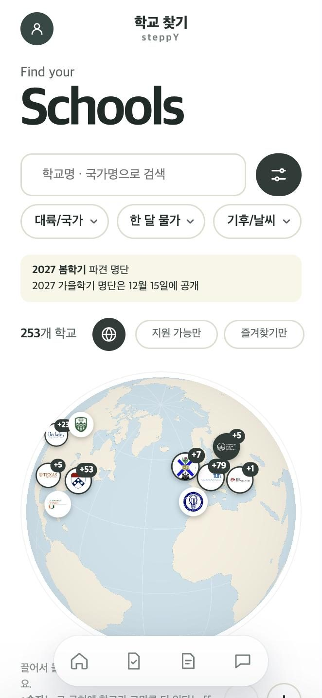
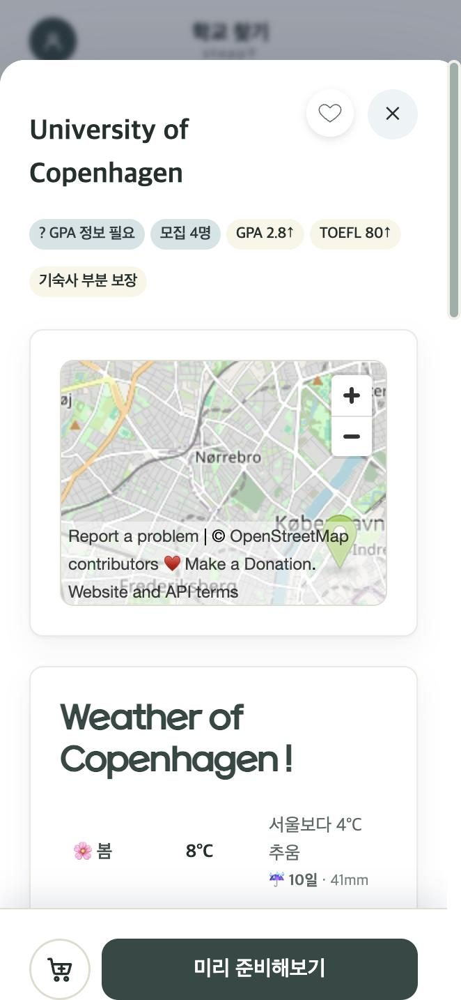
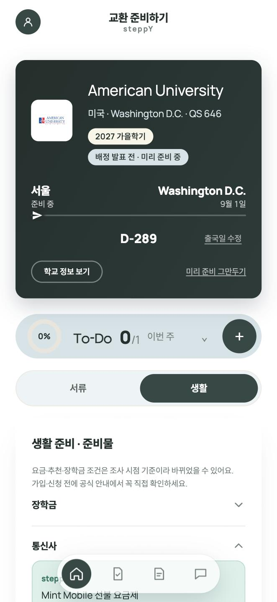
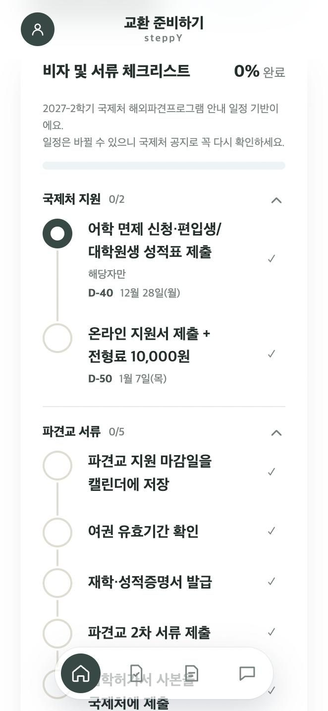
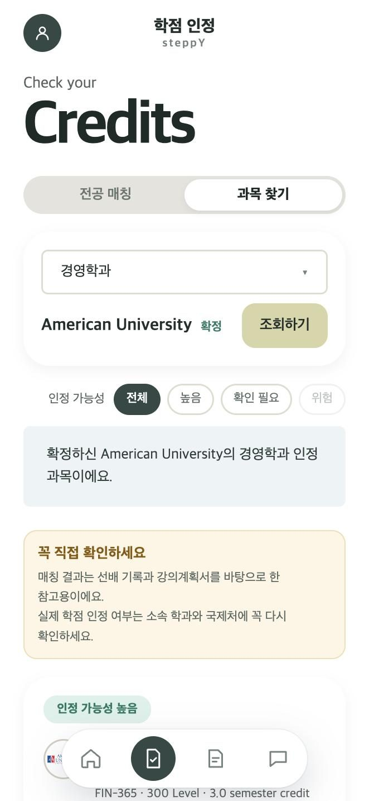
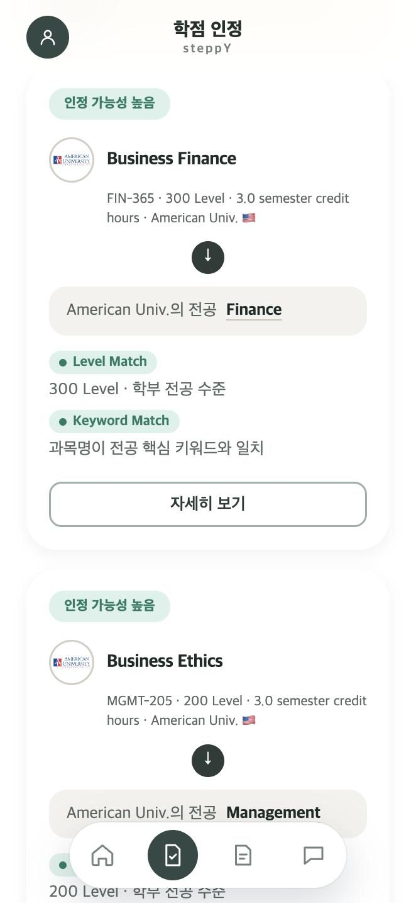
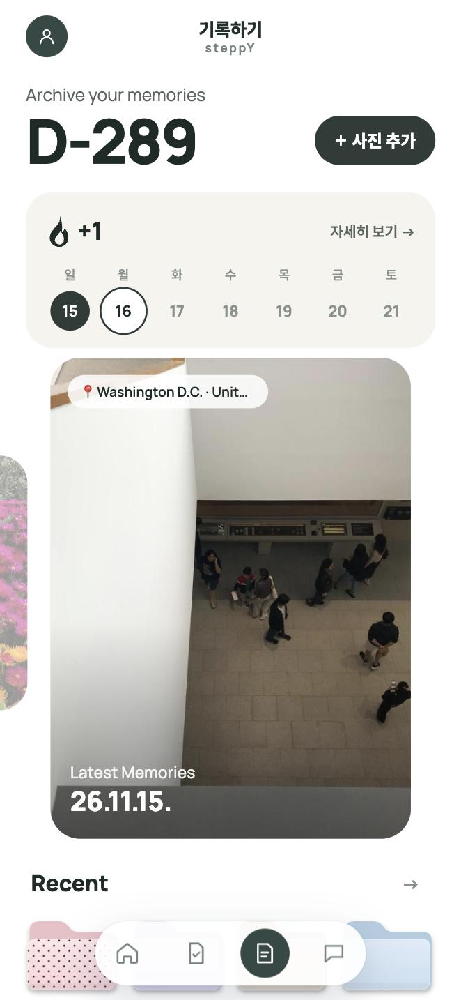
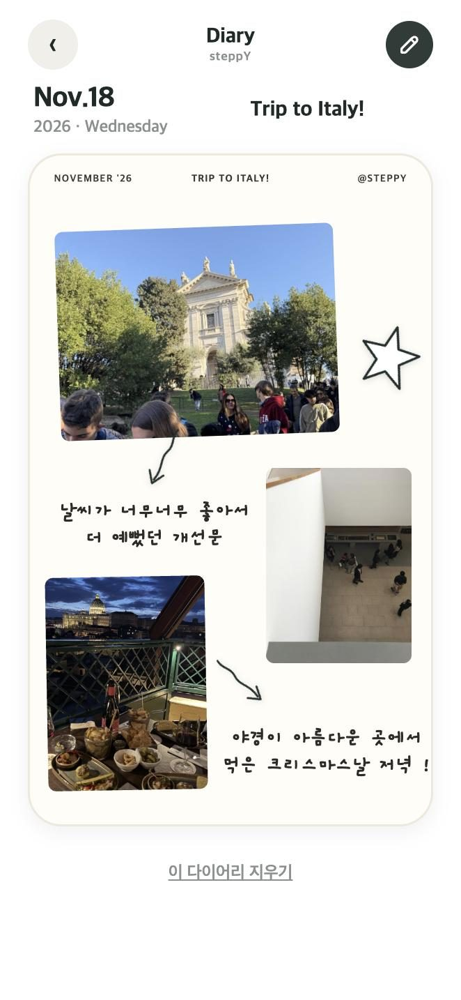

교환학생 준비
steppY로 한번에!
0개
파견교
0개
전공
0개국
생활 정보
교환학생 준비부터 추억 정리까지,
교환학생의 모든 Step을 도와줍니다
9:41

9:41

Four Steps! · 01
원하는 학교 찾기
기후, 물가 등 원하는 조건을 설정해
나에게 맞는 학교를 찾아보세요.
학교 정보를 한눈에
steppY에서 수치화한 치안, 교통 편리성 정보 등이
한눈에 보기 좋게 정리되어 있어요.
희망대학표 Picks
가고 싶은 학교를 25지망까지 담아 보세요. 끌어서 순서를 바꿀 수 있고,
1~3지망은 슬롯·생활비·GPA 컷이 나란히 보여요.
9:41

9:41

Four Steps! · 02
파견 준비하기
국제처 지원 일정에 맞춰 이번 주에 할 일을 알려 드려요.
서류·비자부터 통신·계좌·장학금까지,
교환 준비의 A to Z를 함께해요.
Talky
궁금한 건 서로 나눠요.
9:41

9:41

Four Steps! · 03
학점 인정 확인하기
파견교 과목의 수준(Level)과 전공 키워드를 분석해
학점 인정 가능성을 예측했어요.
9:41

9:41

Four Steps! · 04
교환 생활 기록하기
📌 기록하기 탭은 파견교를 확정하면 열려요.
기억하고 싶은 순간을 사진과 글로 꾸며 남겨 보세요.
친구들과 실시간으로 공유할 수도 있어요.